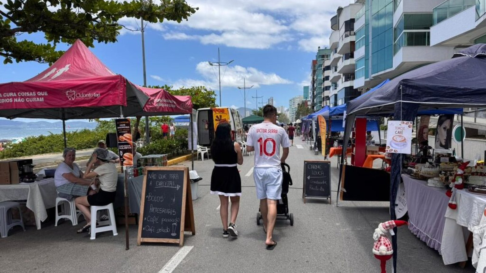
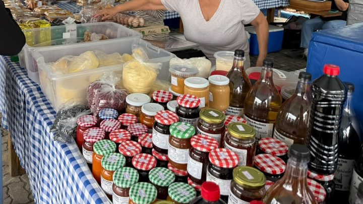
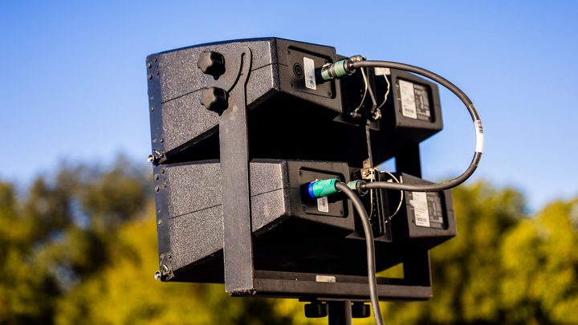

Itapema · Turismo
Itapema · TurismoItapema procura empresa para bancar a pipoca e o algodão-doce do Viva Praia do Dia das Crianças, e o prazo para se inscrever fecha em 5 de outubro
A chamada pública que abriu a lacuna que esta matéria foi fechar.
Em 27 de setembro escrevemos que a Prefeitura de Itapema não divulga quantas edições o Viva Praia teve no primeiro ano, e que o aniversário sairia sem número. Fomos montar a conta. Lendo nota por nota no site da própria Prefeitura, achamos 10 edições realizadas entre 19 de outubro de 2025 e 20 de setembro de 2026. A de domingo, 11 de outubro, das 10h às 18h na Orla do Centro, é a 11ª. A Prefeitura a chama de "maior edição já realizada", sem dizer em quê: o maior número de expositores que ela própria já publicou é o de 14 de dezembro de 2025, com mais de 170.
Em 30 segundos · Modo de Leitura, formato original Santa Informa
O Viva Praia é a feira de domingo da orla de Itapema.
Ela faz um ano agora.
A Prefeitura nunca publicou quantas edições foram.
Nós fomos contar, nota por nota.
Deu 10 edições realizadas.
A primeira foi em 19 de outubro de 2025.
A última, em 20 de setembro de 2026.
A de domingo, dia 11, é a 11ª.
A estreia era para ser em 12 de outubro de 2025.
Choveu, e empurraram uma semana.
Por isso a festa de um ano cai com 357 dias.
A estreia anunciou 148 expositores.
No dia, a Prefeitura falou em cerca de 140.
A segunda, em novembro, passou de 150.
A de 14 de dezembro passou de 170.
Esse é o maior número já publicado.
De março em diante, a conta parou em "mais de 140".
Oito edições foram no domingo.
Duas foram no sábado.
Uma delas foi à noite, das 16h às 22h.
A mais curta foi o Pet Day, de 9h às 12h.
Não houve edição em janeiro.
Nem em julho.
A Prefeitura não explicou as duas pausas.
A de domingo é do Dia das Crianças.
O horário saiu: 10h às 18h.
O trecho exato da orla ainda não saiu.
A nota chama de "maior edição já realizada".
Mas não diz maior em quê.
E não dá número de expositores.
Quem quiser patrocinar tem até segunda, 5 de outubro.
São seis dias antes da festa.
A contagem das edições é nossa.
TurismoPublicada em Redação Santa Informa

Em 27 de setembro, ao cobrir a chamada pública que procura patrocinador para a festa de Dia das Crianças, deixamos uma lacuna anotada: a Prefeitura comemora um ano do Viva Praia sem publicar quantas edições foram. Fomos atrás. Lemos as 22 notas do site da Prefeitura sobre o projeto e separamos as que registram feira realizada, com data. São 10 edições, entre 19 de outubro de 2025 e 20 de setembro de 2026. A de domingo é a décima primeira.
A estreia estava marcada para 12 de outubro de 2025, Dia das Crianças, com 148 expositores confirmados. A chuva empurrou tudo para o dia 19, e no dia a Prefeitura falou em cerca de 140. Vieram então 9 de novembro, a de Natal, com mais de 150; 14 de dezembro, a última de 2025, com mais de 170; 7 de fevereiro, a única noturna, num sábado, das 16h às 22h; 8 de março, de Páscoa e Dia da Mulher; 12 de abril, o Pet Day, a mais curta, das 9h às 12h; 17 de maio e 14 de junho, as duas de clima de Copa; 8 de agosto, de Dia dos Pais; e 20 de setembro, a última antes desta. Oito caíram em domingo, duas em sábado.
Mostra dois buracos no calendário: não há nota de edição em janeiro, auge da temporada, nem em julho. Mostra que o número de expositores subiu até dezembro e depois parou de subir no texto oficial, porque de março em diante todas as notas repetem "mais de 140". E mostra uma confusão de contagem na própria fonte: a nota de 26 de fevereiro chama a edição de 8 de março de "primeira edição do Viva Praia em 2026", embora a noturna tenha acontecido em 7 de fevereiro. A festa de um ano chega com 357 dias de estrada, porque a estreia atrasou uma semana.
A nota de 2 de outubro fechou uma das pontas que deixamos em aberto: o horário, das 10h às 18h, na Orla do Centro, com brinquedo inflável, oficina, pipoca, algodão-doce e palco. Quem quiser patrocinar tem até segunda, 5 de outubro.
O resumo de 30 segundos está no topo e a versão completa é o texto acima. Aqui ficam as três leituras da casa sobre o mesmo assunto.
Clara, a otimista
Dez feiras em um ano não é pouco para projeto novo. É quase uma por mês, com chuva, com tempo instável e com uma estreia adiada no meio. Quem monta banca sabe o que isso significa: data que acontece vira renda que dá para planejar.
E repare que o projeto foi testando formato. Teve noturna, teve Pet Day de três horas, teve tenda de figurinha na época da Copa. Isso é gente prestando atenção no que funciona, não carimbo repetido doze vezes.
Seu Prudêncio, o criterioso
Merece atenção o fato de a conta de edições não existir publicada em lugar nenhum. Um projeto que vai para o segundo ano, com edital de feirante sendo reescrito agora, precisa de série própria: data, horário, trecho da orla e número de expositores, edição por edição. Sem isso, cada aniversário vira adjetivo.
Uma sugestão útil para a Secretaria: publicar o trecho da orla junto com o horário, e fechar a chamada de patrocínio com mais folga. Seis dias entre o fim do prazo e a feira é prazo apertado para quem precisa comprar material e montar equipe.
Dito isso, o saldo é bom. O projeto chegou ao primeiro ano com dez edições, só um adiamento, e esse adiamento foi por chuva, decisão certa. Feira que se repete por um ano inteiro já virou calendário da cidade, e calendário é o que o turismo mais precisa.
Caco, o sarcástico
A Prefeitura anunciou "a maior edição já realizada" de uma feira que ainda não foi realizada. É um talento. Daqui a pouco anunciam o melhor verão da história em maio.
E tem o subtítulo que marca sábado enquanto o texto marca domingo, os dois no dia 11. Pelo menos um dos dois vai estar na orla sozinho, de pipoca na mão, esperando a festa começar.
Agora, sem ironia: dez domingos de feira num ano, com banca de artesão e bolo caseiro na beira da praia, é das coisas boas que a cidade arrumou. Só falta a Prefeitura contar. A gente contou de graça.
Fontes: todas as notas são do site da Prefeitura de Itapema. Da estreia: o anúncio com 148 expositores, o adiamento para o dia 19 e o balanço do dia. Depois: 9 de novembro de 2025, 14 de dezembro de 2025, 7 de fevereiro de 2026, 8 de março de 2026, 12 de abril de 2026, 17 de maio de 2026, 14 de junho de 2026, 8 de agosto de 2026 e 20 de setembro de 2026. A nota de "primeira edição de 2026" é a de 26 de fevereiro. O anúncio da edição de domingo é de 2 de outubro de 2026, e a chamada de patrocínio está na nota de 23 de setembro, que nós cobrimos nesta matéria. A contagem das edições, a soma dos dias e a distribuição por dia da semana são conta nossa, feitas em 4 de outubro de 2026.
Itapema · TurismoA chamada pública que abriu a lacuna que esta matéria foi fechar.

Itapema · InfraestruturaOutro espaço público da cidade que a iniciativa privada ajudou a bancar.

Itapema · Poder PúblicoO que a cidade já assinou para a mesma semana do Dia das Crianças.